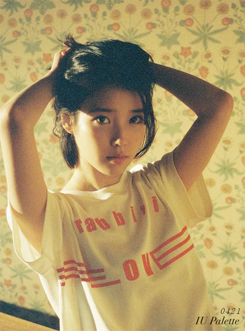

MY playlist

백예린_Hall&Oates(구름 Remix)/아이
유_이런엔딩/10CM _ Everything/호피
폴라_Lovemelikeyoudo(cover)/루시
_개화(Flowering)/ByeBye Badman-
IslandIsland/설_Dryflower/혁오_공
드리
정열적이고 충실하며 목가적이고, 낭만적이며 내적 신념이 깊다. 마음이 따뜻하고 조용하며 자신이 관계하는 일이나 사람에 대하여 책임감이 강하고 성실하다. 이해심이 많고 관대하며 자신이 지향하는 이상에 대하여 정열적인 신념을 가졌으며, 남을 지배하거나 좋은 인상을 주고자 하는 경향이 거의 없다. 완벽주의적 경향이 있으며, 노동의 대가를 넘어서 자신이 하는 일에 의미를 찾고자하는 경향이 있으며, 인간 이해와 인간 복지에 기여할 수 있는 일을 하기를 원한다.라고 하지만 대체로 감수성이 매우 풍부하고(감정과잉) 자신만의 세계가 확실(고집이 세다)하며 항상 약간의 우울함을 가지고 있는 성격으로 설명되며 MBTI에 과몰입하는 경향을 보인다.
가사에 고민한 흔적이 없는 노래들을 좋아하지 않는다. 요즘 많이 들리는 이별 발라드들이 특히 그렇다. 그 발라드 속에 경험은 존재할 지 모르나 가사에 대한 고민, 그러니까 글을 다듬고 더 좋은 단어, 문장, 호흡을 고민한 흔적이 보이지 않는 것이 불편하게 느껴진달까. 너무 어려운 말을 쓰는 노래도 싫지만 너무 쉬운 길을 가려고 하는 노래는 더욱 정이 안가고. 그런 점에서 인디가수들의 음악을 좋아하지만 요즘은 아이돌 노래들도 가사나 세계관이 탄탄하면 자주 듣는다.
"잊지마 넌 흐린 어둠 사이 왼손으로 그린 별 하나 보이니 그 유일함이 얼마나 아름다운지 말야" 
앞의 문장은 IU_Celebrity의 가사 중 한 구절이다. 우리 모두는 유일하고 각자 단 하나의 Celebrity라는 마음을 담은 곡은 발매된지 한달이 지났음에도 여전히 차트 상위권에 머물고 있다. 노래의 가사처럼 개인은 모두 다르고 유일하다. 사실 모두 다른 사람을 똑같아 보이게 만드는 일이 훨씬 어렵고 복잡스런 일이다. 그렇게 얘기한다면 다른 두 가수가 비슷한 느낌이 든다는 건 그 비슷한 느낌을 위해 노력했다는게 아닐까. 그럴 필요없다고 말해주고 싶다. 자신들이 하고 싶은 음악을 아는 뮤지션들의 노래는 결국 모두가 좋아하더라.
백예린_Hall&Oates(구름 Remix)/아이
유_이런엔딩/10CM _ Everything/호피
폴라_Lovemelikeyoudo(cover)/루시
_개화(Flowering)/ByeBye Badman-
IslandIsland/설_Dryflower/혁오_공
드리
예술은 현재와 다른 공간, 감성을 느끼게 한다는 점에서 매력적이다. 어딘가 도망칠 구석을 찾고 있는 사람이라면 더욱 예술을 사랑하고 빠져들수밖에. 예술이라는 거창한 이름으로 포장하지만 사실은 현실의 도피처, 잠시 숨을 공간, 방공호라고 할 수 있지 않을까. 게다가 그 방공호가 너무 내 취향으로 꾸며져 있다면? 하늘거리는 커튼 사이로 햇빛이 들고 식물과 꽃들이 여기저기 남발하고 내가 좋아하는 책들이 가득하고 심지어 창 너머로는 바다가 보인다면? 어느 날은 런던의 한 카페, 또 다른 날은 이탈리아의 어느 해변, 가끔은 다낭의 높은 산 너머에 자욱한 안개가. 어떤 날은 가장 사랑하는 사람을 만나는 꿈까지.
숨는 게 좋은 해결책은 아니지만 도망치고 싶을 정도로 마음이 일렁일때, 음악은 확실히 우리를 괜찮은
상태로 만들어준다. 결국 늘 도망치고 싶은 우리는 음악을 사랑할 수 밖에.